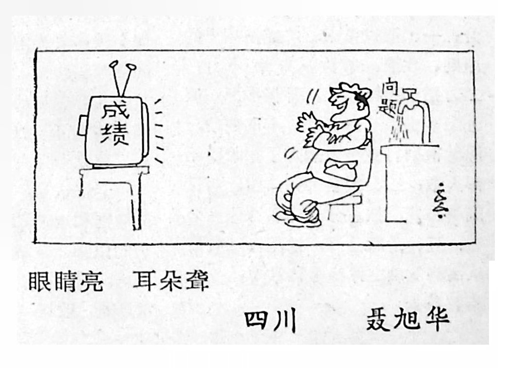

聂旭华 《人事》1986年第5期（总第8期），第11页
眼睛亮 耳朵聋
Sharp Eyes, Deaf Ears
- Text in the drawing
- 成绩 / 问题
Achievements / Problems - Description
- An official watches a television labeled 成绩 (achievements) intently while blocking his ears against a tap dripping 问题 (problems).
- Artist
- Nie Xuhua 聂旭华
- Published in
- 《人事》1986年第5期（总第8期）, p. 11
- Themes
- False reporting and boasting · Bureaucratism

Cite
Nie Xuhua, “眼睛亮 耳朵聋” [Sharp Eyes, Deaf Ears], Renshi (Personnel) 《人事》, 1986, no. 5, p. 11.